The Earth Commons Institute · Georgetown University
Climate Extremes, Environmental Change, and Societal Response
Walid Ouaret, Ph.D. is an Earth observation scientist and Postdoctoral Fellow at Georgetown University’s Earth Commons Institute. His research combines satellite observations, climate data, field surveys, and quantitative modeling to investigate environmental change, climate-related risks, and societal responses.
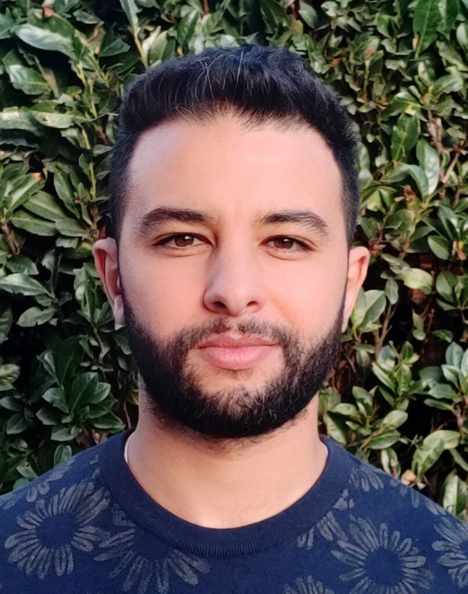
Postdoctoral Fellow, SuRGE Lab, The Earth Commons Institute, Georgetown University
Research areas
01
Earth Observation & Agricultural Change
Satellite remote sensing, cropland mapping, agricultural monitoring, probability-based field surveys, and land-use dynamics in dryland environments.
Established
02
Climate Signals & Societal Response
Drought indicators, institutional recognition of environmental stress, climate governance, and observable societal responses to climate extremes.
Established
03
Climate Risk & Critical Infrastructure
Emerging research connecting environmental extremes with energy systems, water infrastructure, data centers, and resilience analysis.
Emerging · early stage
Featured research
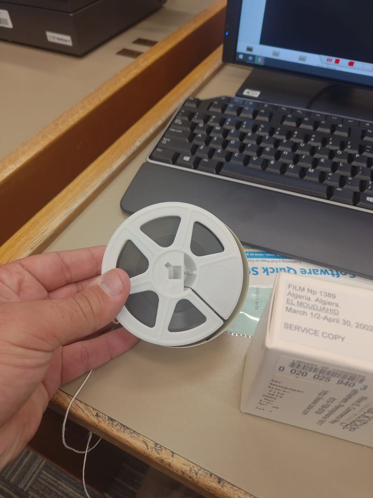
Archival research for the rain-ritual record.
Accepted · Environmental Research: Climate
Rain Rituals and Drought Governance in North Africa
A 25-year archival record (2000–2024) of 63 state-organized rain rituals in Algeria, Morocco and Tunisia, linked to drought indicators over cropland. Institutional recognition of drought follows agricultural drought, concentrating in the rainfed cropping season and in the main rainfed regions.
Authors Ouaret, W., Brown, M. E., Endsley, A., Enenkel, M., Anderson, W., Hadjout, S., & Loboda, T. V. Coverage Eos (AGU): When a Prayer Is Also a Climate Signal, 2025
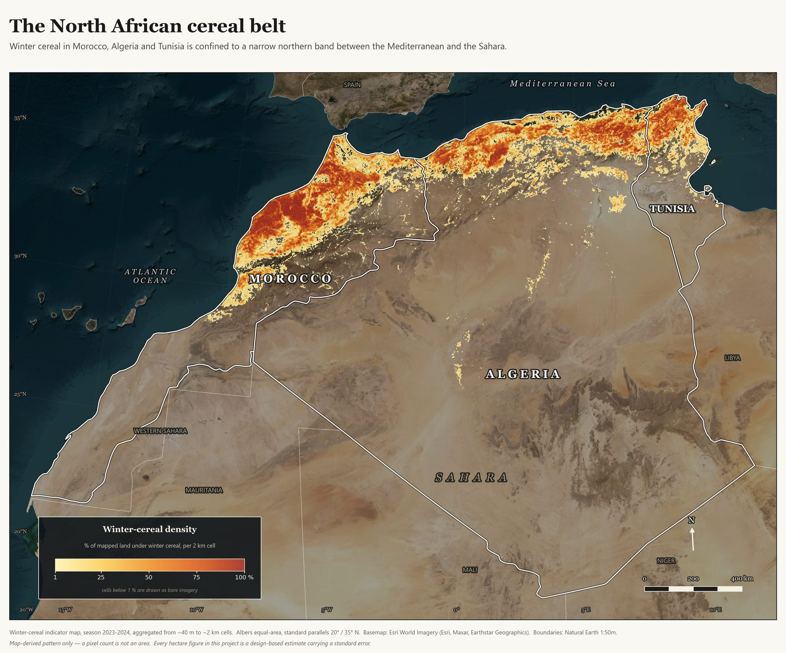
The North African cereal belt, 2023–2024 season. Map-derived pattern for illustration; not an area estimate.
Completed · manuscript in preparation
Cropland Mapping and Area Estimation
A probability-based field survey across the principal cereal-producing regions of Algeria, Morocco and Tunisia, used for design-based cropland area estimation and an independent assessment of publicly available satellite cropland products.
Season 2023–2024 agricultural season Data 1,350 field observations · satellite cropland products
Further projects
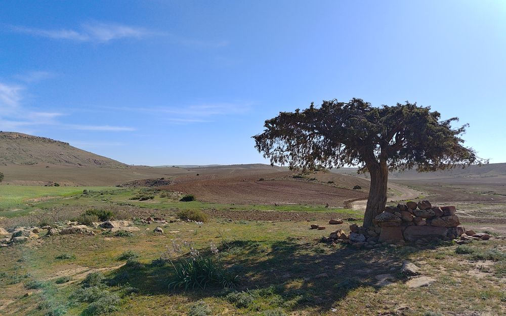
Drought and Long-Term Agricultural Land-Use Change
Satellite cropland records, gridded drought indicators and statistical modeling of cropland expansion and contraction, 2000–2024.
Agricultural Greenhouse Mapping in Algeria
Deep learning on satellite imagery to map greenhouse structures and monitor intensive agricultural land use.
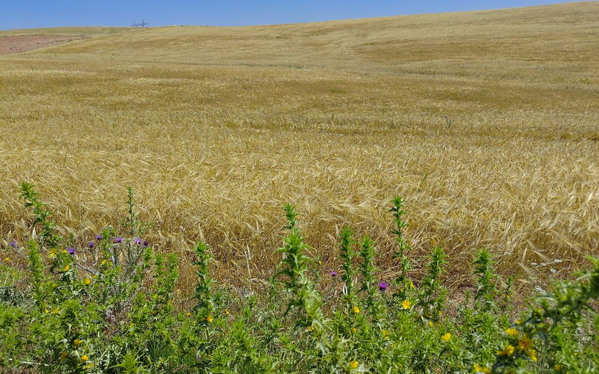
NASA HarvestStat
Subnational crop production statistics for North Africa, and the evolution, volatility and climate sensitivity of wheat systems.
Climate Risk and Critical Infrastructure
Early-stage research at The Earth Commons Institute. Details will be shared as the work develops.
In the field
Field campaigns in 2023–2024 covered the cereal belt and its margins in Algeria, Morocco and Tunisia, producing the field reference data behind the cropland work.
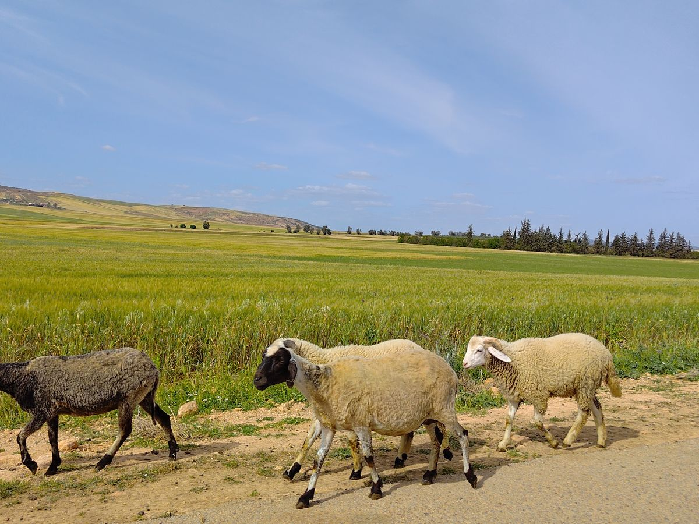
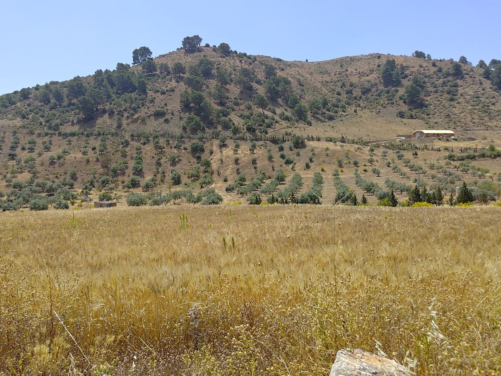
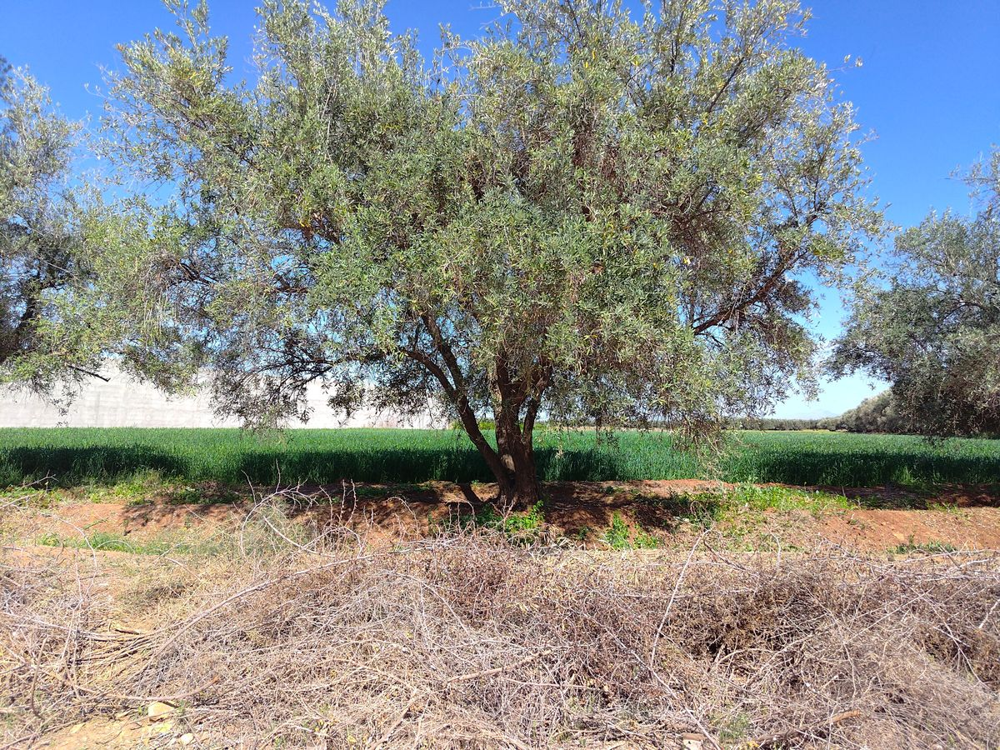
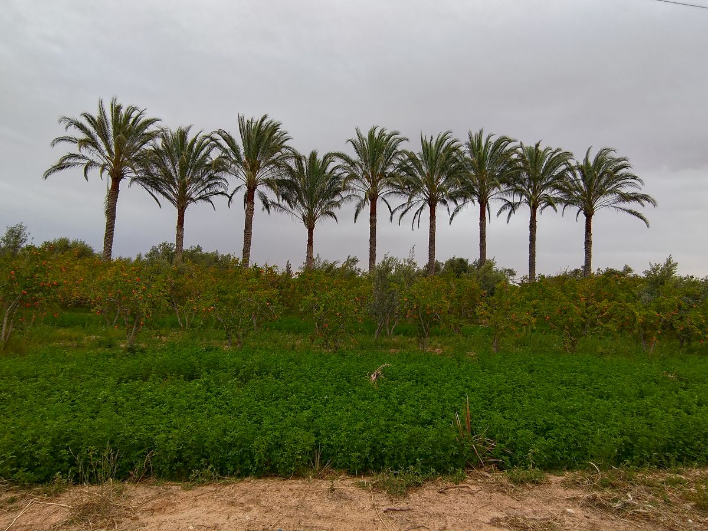
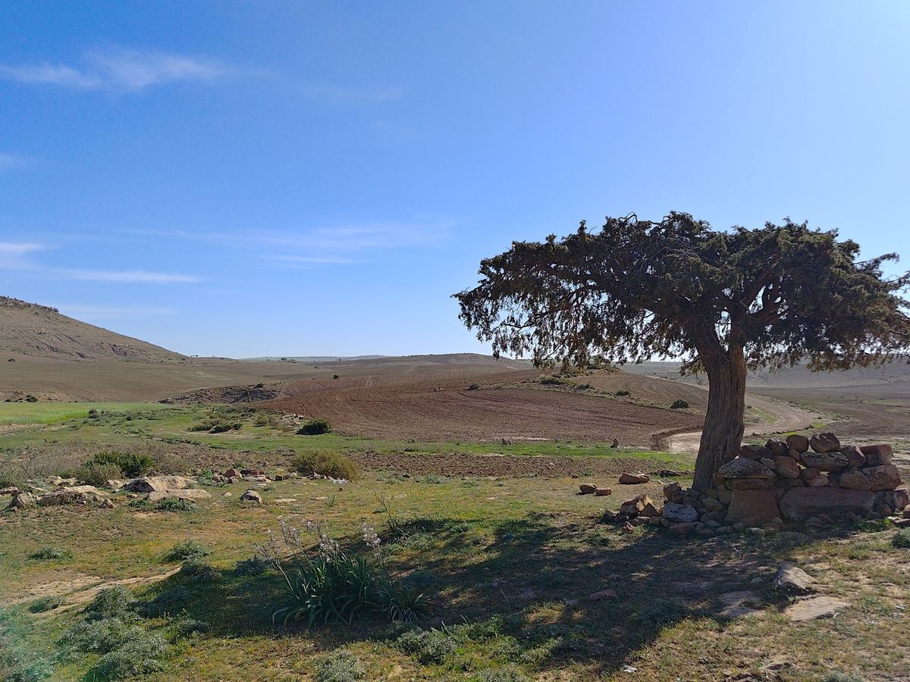
Selected publications
2026 Rain rituals signal climate risk in drylands Environmental Research: Climate · DOI pending Accepted
2024 Mapping Agricultural Greenhouses in Algeria: A Deep Learning Approach IEEE M2GARSS 2024, 103–107 · doi:10.1109/M2GARSS57310.2024.10537540
2021 Liming agricultural soils in Western Kenya: Can long-term economic and environmental benefits pay off short term investments? Agricultural Systems, 190, 103095 · doi:10.1016/j.agsy.2021.103095
- Media Rain-ritual research featured in Eos (AGU): When a Prayer Is Also a Climate Signal (2025)
- Open curriculum Open Climate Science for Agriculture: five modules in English, French and Arabic, with code on GitHub
- Recorded seminars SEEDS Seminar Series: 13 talks on remote sensing and AI for agriculture (2025)
Teaching & open science
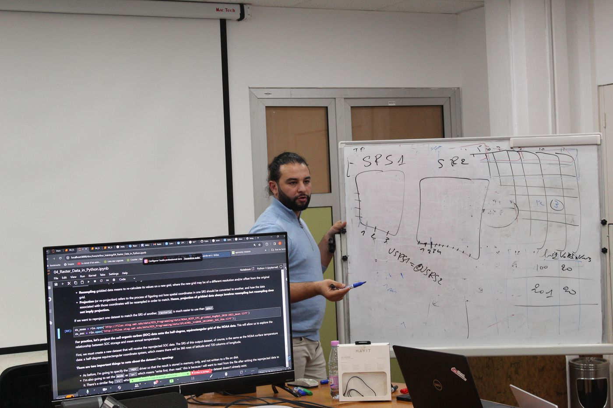
I co-developed Open Climate Science for Agriculture, a NASA-funded open curriculum in English, French and Arabic, and taught its workshops in Algeria. I also organized the SEEDS Seminar Series. Earlier, I advised undergraduate researchers and served as a teaching assistant for GIS courses at Miami University.
My collaborations span the University of Maryland, the University of Montana, NASA HarvestStat and research institutions in Algeria.
About
Ph.D. in Geographical Sciences, University of Maryland (2026), directed by Tatiana V. Loboda with mentorship from Molly E. Brown. Before the doctorate: landscape and agricultural modeling at INRAE and Wageningen University, and remote sensing research at Miami University’s Geospatial Analysis Center. Trained as an agronomist at the École Nationale Supérieure Agronomique, Algiers, with master’s degrees from Paris-Saclay University and AgroParisTech, and from the Mediterranean Agronomic Institute of Chania.
Collaborations & Contact
I welcome inquiries about research collaboration, student mentoring and invited talks.
The Earth Commons Institute, Georgetown University, Washington, DC
wo140@georgetown.edu · Georgetown profile · Google Scholar · GitHub · LinkedIn · ORCID